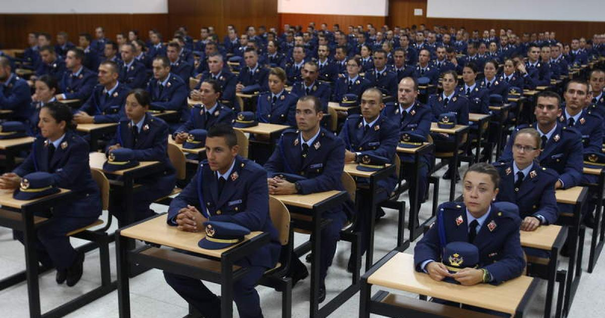

Breve explicación de las funciones que tiene el Ejercito del Aire
Los militares del Ejército del Aire mantienen la seguridad del Estado y de sus aliados desde el aire. También proporcionan ayuda y asistencia donde se les necesite. La mayor parte ocupan puestos de tierra, mientras que un reducido número (llamados tripulantes de avión) tienen obligaciones de vuelo.
Puestos de tierra
Los militares de tierra ofrecen una variedad de servicios para permitir que el Ejército del Aire vuele. Se especializan y trabajan la mayor parte del tiempo en el puesto elegido.
Sin embargo, todo el personal del Ejército del Aire se entrena para asumir responsabilidades en tiempos de guerra. A continuación se muestran algunos de los puestos de tierra, clasificados en tres categorías principales: cuerpo técnico, asistencia y atención médica y dental.
Cuerpo técnico:
Existen muchos puestos de técnicos especialistas ya que el Ejército del Aire utiliza un equipamiento muy variado. Los técnicos, revisan y reparan lo siguiente:
motores, armas, vehículos de tierra, equipos eléctricos, todo tipo de aeronaves, sistemas de defensa electrónica, de comunicaciones y de vuelo.
Los técnicos se especializan en puestos como, por ejemplo:
Aviónica, mantenimiento de sistemas de radar, de navegación y vuelo, y armas e instrumentos aéreos, ingeniería electrónica de tierra, que se ocupa de las telecomunicaciones de tierra, radares y sistemas de misiles tierra-aire.Puestos de asistencia
Los puestos de asistencia son necesarios para mantener operativa una unidad del Ejército del Aire.
Los militares que ocupan puestos como operaciones y apoyo aéreo usan equipos electrónicos sofisticados en su trabajo. Manejan sistemas de defensa y seguimiento aéreo, sistemas de comunicaciones terrestres y de radio, y se comunican con el personal de la aeronave.
Los artilleros del Ejército del Aire son especialistas en combate que proporcionan protección de tierra a las bases del Ejército del Aire, en territorio nacional e internacional.
Existen otros puestos de protección como los bomberos y la policía del Ejército del Aire.
Algunos militares se especializan en trabajos administrativos, que incluyen el trabajo de administración y personal. Otros tramitan provisiones y acuerdan entregas de cargamento y pasajeros en destinos de todo el mundo.
Los cocineros cocinan y preparan las comidas, y los proveedores de catering sirven la comida en los comedores.
Los instructores de ejercicio físico proporcionan programas de ejercicios físicos y de entrenamiento a todo el personal del Ejército del Aire.
Atención médica y dental:
Las Fuerzas aéreas proporcionan una gran variedad de servicios médicos, de enfermería y odontológicos a su personal y sus familias. Estos servicios se proporcionan en centros médicos que se encuentran en las bases de las Fuerzas Armadas, en hospitales de la Seguridad Social y en operaciones que se llevan a cabo en el extranjero.
Los puestos incluyen enfermería, radiografía y auxiliar de odontología. También hay disponibles una amplia variedad de puestos de técnico de asistencia sanitaria, como protésico dental, técnico de farmacia y técnico de salud ambiental.
Tripulación de avión
La tripulación de un avión tiene obligaciones de vuelo. Son conocidos como operadores de sistemas de armas. Se dividen en cuatro especialistas: tripulante, lingüista, operadores de guerra acústica y electrónica. La naturaleza exacta de cada puesto varía en función del tipo de aeronave.
Los tripulantes organizan la entrega de tropas y suministros en todo el mundo.
Los lingüistas usan sus habilidades lingüísticas asociadas a vuelos operativos.
Los operadores de guerra acústica y electrónica usan tecnología de radar y sonar para identificar objetivos sobre y bajo el mar.
El personal del Ejército del Aire deben estar preparados para vivir y servir en cualquier lugar del país o del extranjero. A veces deberán trabajar en condiciones difíciles y peligrosas (incluso podrán poner su vida en peligro), especialmente si trabajan como tripulación de avión